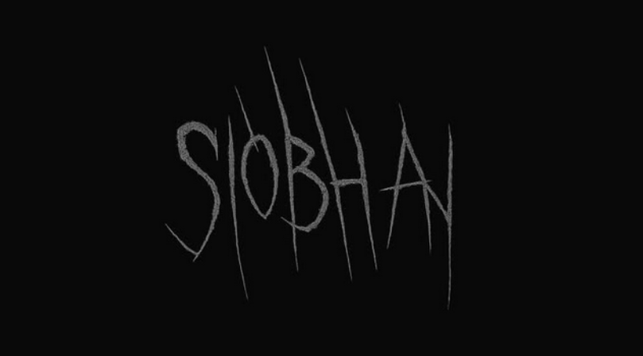
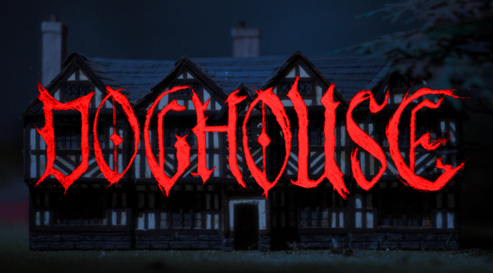
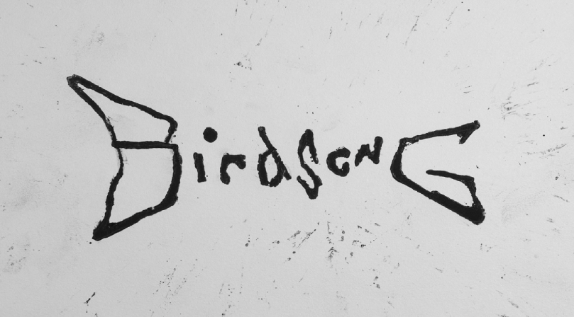
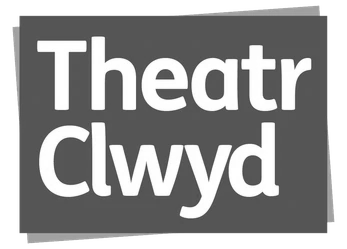
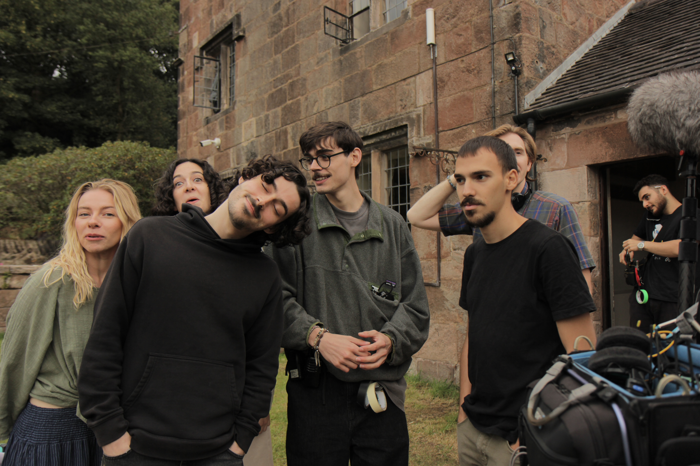

Films
SIOBHAN
A folk horror exploring themes of religion, grief, and control. Working alongside Co-Art Directors Priya Sri-Rangan and Lucy Martin, I assisted the art department with prop making, set dressing, fabrication, and general art department support.

DOGHOUSE
I worked as Production Designer and Producer on DOGHOUSE, taking responsibility for the film's visual design, props, set dressing and location scouting, alongside scheduling and coordinating cast, crew and contributors. The project gave me the opportunity to develop a practical, handmade approach to production design, combining physical fabrication, printmaking and visual storytelling.

BIRDSONG
BIRDSONG was a folk horror short film made with Anteroom Studios, where I worked as Production Designer, Prop Builder and Producer. I developed the visual language of the film through set dressing, costume, props and practical fabrication, while also helping to coordinate the production.

DRS SET CONSTRUCTION
Over the past nine months I have worked with DRS Set Construction as a scenic carpenter, beginning as a junior carpenter and progressing through professional film and television construction work. I have contributed to the fabrication, construction and installation of sets across three major feature film productions, working as part of larger construction teams both in the workshop and on location.
My experience includes timber construction, set fabrication, workshop preparation, installation and practical problem solving on production.

THEATR CLWYD
I worked within the scenic department at Theatr Clwyd, gaining practical experience in scenic construction, painting, fabrication and workshop production. The role involved building and finishing scenery for theatre productions, working from design drawings and adapting construction techniques to the requirements of each production.
This experience formed the foundation of my practical work within the art department and led into my subsequent work in film and television set construction.

Clients

About Me
I am a Production Designer, Scenic Carpenter and Art Department practitioner working across film, television and theatre. My practice combines production design with practical construction, fabrication and problem solving, allowing me to take ideas from the initial design stage through to physical production.
I have experience across professional film and television productions, including set construction with DRS Set Construction, as well as scenic work at Theatr Clwyd. Alongside construction, I have worked in production design, props, set dressing and art department roles on independent films and commercial projects.
My creative work is strongly influenced by fine art, photography, printmaking and the environments around me. I enjoy working practically and collaboratively, particularly on projects where design, fabrication and visual storytelling overlap.
My Resume